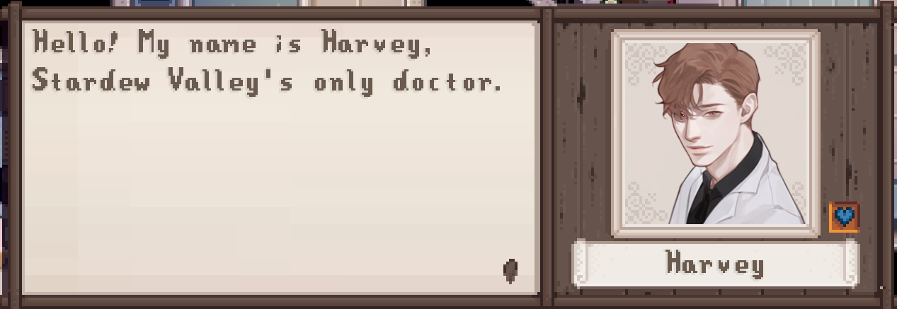

Technology has always been something I've been interested in since I was young. From learning how to make my hobby blog prettier and easier to navigate by using Tumblr HTML/CSS tutorials when I was in high school to teaching myself to build websites from scratch now, I found enjoyment in learning all the skills I gained along the way. Even with all that experience there was one thing that taught me to be a better, well-rounded and more successful coder: modding.
Mods (short for modifications) are what players create for their favorite games to either enhance their gameplay experience or even add in silly, fun things into the game world such as giant bunny rabbits in the wild west all using their coding language of choice. Back in 2018 I had become interested in the modding scene when I purchased the game Skyrim on PC. I Google'd the best sites to find mods and when I found one I had so much fun looking through all the mods, almost like I was shopping Amazon's Black Friday Sales. From retexturing dragon skins, to reanimating characters/animals and adding in new creatures/characters, this was all fascinating and exciting to me. After playing with so many mods I began to think, "How did people learn to do this?". As more time went I began to have ideas about what I would want to add to Skyrim. I then decided I also wanted to code like those modders with millions of downloads and such clean code that adding in a new location to the game didn't break it or slow down anyone's system. They had studied Skyrim's scripting languages, C++ and all modding resources down to a T, and I dedicated myself to doing the same, but with a simpler game, Stardew Valley.
Stardew Valley is a role-playing simulation game based around farming and maintaining relationships with villagers with some cooking, fishing and other simulation elements thrown in the mix. The game was created by one man, Eric Barone (ConcernedApe), all by himself, using C#. I thought this was amazing and truly inspiring he could make such a high quality and fun game alone that is now loved by thousands all over the world. Though I love his game and his hard work, some things felt missing from the game. While I admired his skills on being able create such a large game alone, working by yourself on a project causes you to work harder than if you are on a team, causing oversights from exhaustion and lack of time. In addition, you are not able to brainstorm with a group of others so everyone can pitch greater ideas together than one person working alone. In this case, there were some parts of the game he had oversights on, parts that would make it more enjoyable, inclusive and meaingful for players. One of these things were dialogue enhancements. When playing Stardew I felt that a lot of the characters were flat in their personalities. They would repeat the same phrases every few days and I was not able to get too engaged in the game because of this and a couple other features I felt were missing. So I headed over to NexusMods, the big house for all mod creators, mod fans and mod resources. I found a lot of mods to download that would give me 20 dog breeds to choose from instead of the stock beagle I was stuck with or give me 500 options of hand made and colored furniture that another modder had created with all the spare time she had outside of work. After downloading about 50 mods and creating Stardew Valley into something more meaningful, diverse and fun for me I kept thinking, "This is amazing! I want to do this too! Can I do this too? Stardew Valley looks so simple to mod versus Skyrim!". I started looking into other modder's code and searching for modding resources. I found it quite simple for me to understand after my coursework from freecodecamp, Codeacademy, LinkedIn Learning and YouTube tutorials. The language to mod for Stardew Valley was JSON! I knew this! This was simple and easy for me to use, so I started getting to work on my very first mod, a dialogue mod to enhance my favorite bachelor, Sam.
Turns out, things took a little longer than I thought. Setting up the structure and skeleton of the mod was easy. Just a simple JSON file skeleton telling the game what I wanted to change, for what character, where his dialogue was located in the files and the most recent game format. I could then input my entries after setting up the skeleton like so:
{
"Format": "1.4",
"Changes": [
{
"Action": "EditData",
"Target": "Characters/Dialogue/Sam",
"Entries" : { //my changes here // }]}
But I couldn't just type aimlessly into the entry field. I needed to learn the key formats for different things such as what command code matched which portrait art that would display to show the character's moods/reactions to player input, how to make a dialogue tree so players could select from options A - C and then receive a different response from Sam based on their choice, or how to create breaks in my code so the game wouldn't load in an entire paragraph in one text box, annoying players and essentially making my mod useless. I also had to learn how to make location specific dialogue and learn how Eric named his locations so my code would display properly in each location in the game. I couldn't have Beach location dialogue loading in when the player was at home! Or rainy day dialogue showing up when it was bright and sunny out!
{
"LogName": "Rainy",
"Action": "EditData",
"Target": "Characters/Dialogue/rainy",
"Entries":
{
"Sam": "#$c .5#Awh it's raining out which means I can't use my board today. I almost had it nailed down how to do this new trick. $s#There's a lot of rain coming down today. I guess that means you can skip watering your crops today @. $h"
}
It was a lot to take in, but I studied all of it, learning tricks along the way. One of these tips was that instead of memorizing each index number of the character portraits and then having to deal with index number changes whenever he updated his game to add new portrait art, I could just type in $h for happy or $s for sad. This made my life so much easier, and I was able to code faster without having to reference the character art too much.
I then learned more about testing programs/code. Before I ever release a website I've built and even this website you are using now that I built from scratch, I always test it. Everything. For every scenario. I think about things like how would an older not-tech-savvy person using a tablet access my website. Can they click everything I made click-able? Have I added enough room for human error if they happen to click just a little right of my menu button that it'll still open? I had this thought process as well while making my mod. I did not want to release it until I was sure all the code worked. I didn't want to release code that would break people's game or put it in an infinite loop, forcing them to reload their save and annoy them, so I tested it, over and over again. I played with it for weeks in my own game, making sure it was compatible with other people's mods, making sure no dialogue got stuck in an infinite loop because I forgot the stray " at the end of a string or making sure no extra dialogue windows popped up because I mistakenly put in an extra #$b# break code at the end of a string. Sometimes I would come across these mistakes when testing but it taught me to become a better coder. I used to be so afraid to make mistakes, but I then understood that they are an essential part of learning. I can learn from them and not make that same mistake again.
After spending all that time making and testing my Sam mod, I finally posted it on Nexus. I was happy and excited but a little nervous. Would people like it? What if even after all my testing I still made a mistake? Only a day had passed and the mod became one of the "Hot Mods" of October with hundreds of downloads and a couple of comments praising it. I had reached 30 endorsements in a few days, thousands of views and the mod still remains in the "Trending Mods" section to this day. In January 2021 I was granted the "Recognized Mod Author" award from Nexus mods for reaching over 1,000 downloads on my mod and contributing to the community. It was in that moment that after hours and days and months of teaching myself so much about coding that I realized I was good at it. I also had made people happy, enhanced their gameplay and learned so much in the process, not only about JSON and how it functions, but fundamentals for other programming languages too. I also learned other skills such as never giving up even when you can't quite figure something out, learning to ask for help when you've exhausted all your resources and to always double, triple check your code to prevent infinite loops or crashing someone's system. Reading a hundred lines of code is a lot, but it's always better to check it and take your time when coding than crashing someone's computer.
My dialogue mod under Trending Mods as of the time this article is written.
From that experience not only did I learn coding skills, I gained a lot of confidence and learned better communication skills. I learned to not be so shy about posting things and to share with others, because you never know who you can help or whose day you can cheer up by doing one simple thing. You can also gain helpful feedback from others. I learned how to help people who would post questions on Nexus and other modding communities I linked it in about my mod or about coding. I even mentored someone about Javascript and JSON at one point, answering all their questions and giving them the knowledge they need to be successful. All of those were rewarding experiences that not only helped others out but helped me too.
These days while I still continue to learn and keep up to date with Javascript, React and other languages I need for front end web development, I'm working on another mod for Stardew since it is a joy for me. It is much more in-depth than my first one, because I gained so much knowledge from my previous experience, and I am loving learning about making bigger more complex mods. I used to code so slow, taking a month or so to finish up one mod outside of work and other life obligations, but was able to complete 80% of my new mod within a week. I am able to quickly turn this:
{
"Format": "1.4",
"Changes": [
{
"Action": "EditData",
"Target": "Characters/Dialogue/Harvey",
"Entries": {
"Introduction": "Hello! My name is Harvey, Stardew Valley's only doctor. #$b# You can find my clinic nestled right beside Pierre's in the middle of town. #$b# And your name is...? #$b# @. Well, it's nice to meet you Mr. @.^Well, it's nice to meet you Ms. @. $h#$b# I hope to see you around soon! $h#$b# Well... not at the clinic that is but around town, well and healthy. $8#$b# I'll take my leave now."
... //other dialogue I add // .. }]}
into this:

I can not wait to share it with others once it is completed, hoping in turn to make someone smile or teach them along the way. Maybe there's someone out there like me, with no computer science degree but very passionate about technology that wants to try coding. With patience, diligence and a good mentor + resources + tons of practice, they too can have the journey I've had.
Last Updated March 11 21